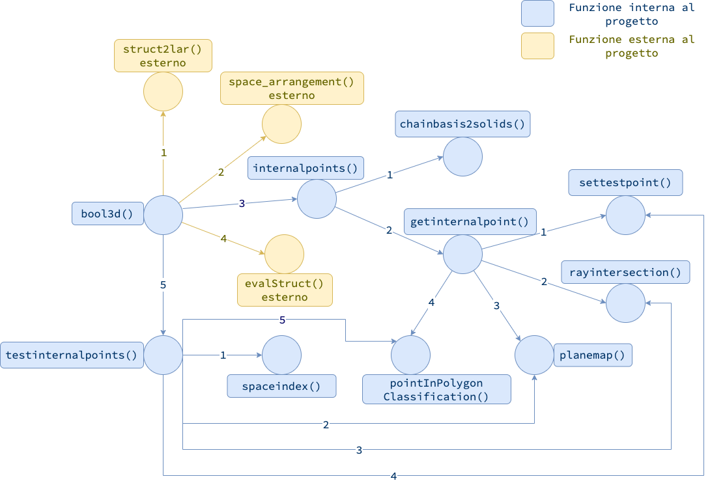

Grafo delle dipendenze originale
In questa sezione è rappresentato il grafo orientato delle dipendenze della base di codice oggetto di studio. Ogni arco orientato rappresenta una chiamata di funzione $(v_1, v_2)$, dove $v_1$ è la funzione chiamante, e $v_2$ è la funzione chiamata. I nodi hanno un’etichetta corrispondente al nome della funzione. Gli archi invece hanno una etichetta numerica consecutiva corrispondente all’ordine delle chiamate dal nodo loro origine. Come mostrato nella figura, la funzione pointInPolygonClassification(), seppur non sia dichiarata direttamente all’interno dei file assegnati al progetto, è usata intensivamente e può essere presa in considerazione per possibili ottimizzazioni.
Grafo per bool2d
Grafo per bool3d

Grafo delle dipendenze definitivo
Per quanto riguarda il grafo delle dipendenze relativamente allo studio definitivo, le dipendenze per Lar Generators (3D) non sono cambiate. È invece diverso il grafo di Lar Generators (2D), perché si è notato che la funzione chainbasis2polygons() non fosse più necessaria.